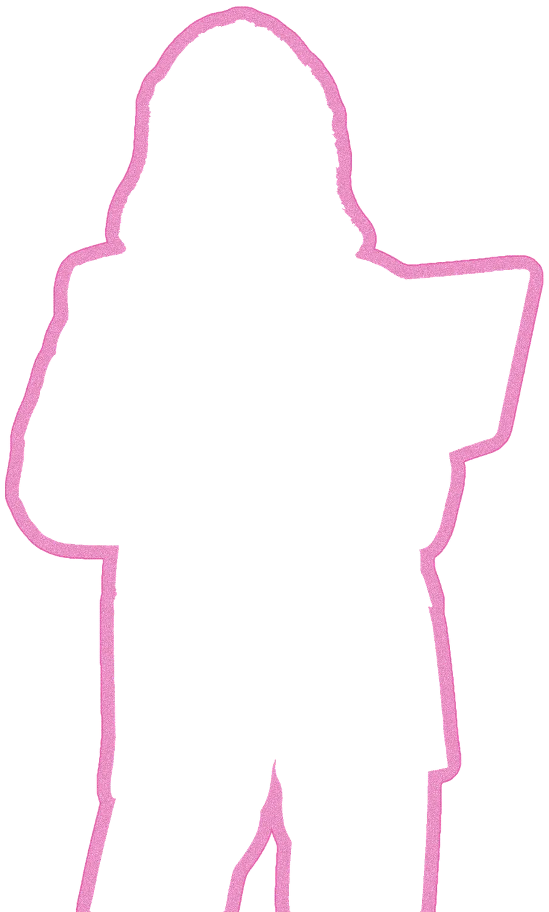
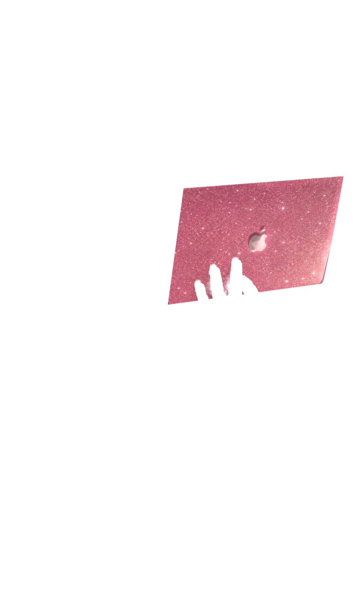
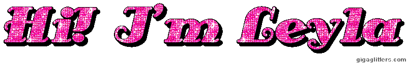
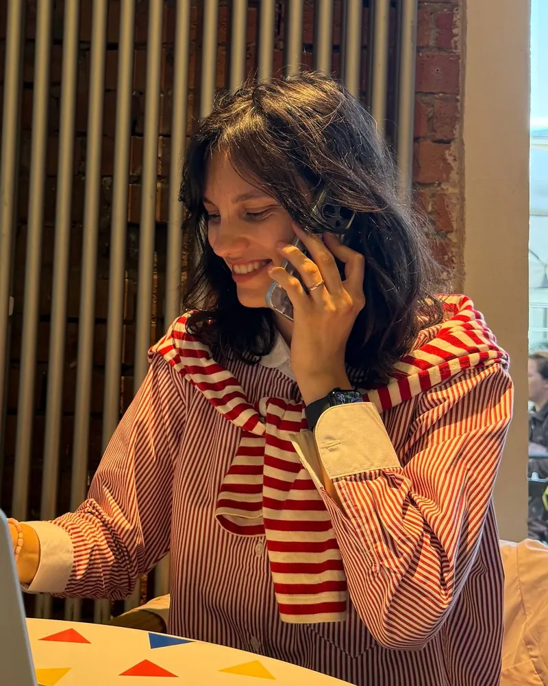
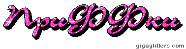

МОЙ_МИР.EXE

Я веб- и UI/UX-дизайнер. Рисую макеты в Figma, собираю сайты в Framer и сама пишу кастомные компоненты на React и Framer Motion, когда стандартных кнопок маловато.
Этот сайтик — мой мини-интернет из нулевых: смотри проекты, черкни что-нибудь в гостевую, забирай кнопку 88×31 или жми «Отдых для глаз», если монитор начал плавиться.
ПРОЕКТЫ.DIR
ДРУГИЕ_РАБОТЫ.DIR
АНКЕТА.TXT

Лейла
Веб- и UI/UX-дизайнер
Делаю спецпроекты, рекламу и сайты: придумываю идею, рисую баннеры и презентации, собираю интерактив и сама довожу его до кода.
Люблю чистую типографику, ламповые детали из прошлого и анимации, у которых есть смысл, а не просто «чтобы всё крутилось».
Ищу команду, которая делает рекламу, брендированные digital-проекты и спецпроекты.
Мой арсенал
В Figma — макеты сайтов и презентации, в Photoshop и Illustrator — баннеры и графика, в After Effects — моушн.
ГОСТЕВАЯ.LOG

Оставь след в истории интернета — черкни пару строк!
[ Черкнуть в гостевую ] [ Читать записки ] [ Мыло ]
Внимание: строчки с плашкой ДЕМО — для красоты. Сервера пока нет, поэтому твоя запись сохраняется только в твоём браузере — другие посетители её не увидят (честно-честно).
| Иконка | Кто писал | Когда | Что сказал |
|---|
ОБМЕН_КНОПКАМИ!
Хочешь поставить ссылочку на меня у себя в блоге? Лови мою фирменную кнопочку 88 × 31 пиксель — тру-классику раннего веба.
Сохранить картинку: leyla-button-88x31.gif (88 × 31 px, анимированная гифка)

ОТДЫХ_ДЛЯ_ГЛАЗ.EXE
ВНИМАНИЕ: ОБНАРУЖЕН ПЕРЕДОЗ ГЛАМУРА.
Включить режим «Отдых для глаз»?
Выключает мерцание, шлейф за курсором, бегущую строку и гифки, а розовый гламур меняет на спокойное небо и классические окна. Проекты, тексты и открытые окна остаются на своих местах.
ДОБРО ПОЖАЛОВАТЬ В ТИХУЮ ГАВАНЬ